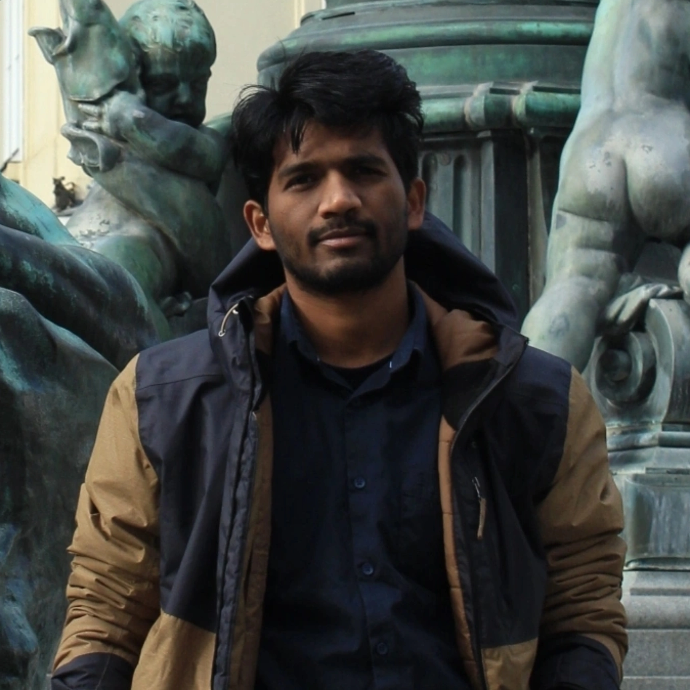

— Postdoctoral Researcher · Paris, France
Postdoc · Bouvier Lab, Paris-Saclay Institute of Neuroscience
CNRS / Université Paris-Saclay · NeuroPSI, Campus CEA Saclay
Investigating the role of the reticular formation in motor function using viral strategies, optogenetics, fiber photometry, and advanced behaviour tracking. Broadly interested in brainstem–spinal cord circuits underlying locomotion and movement.

I'm a postdoctoral researcher in the Bouvier Lab at the Paris-Saclay Institute of Neuroscience (CNRS), where I study how reticular formation circuits orchestrate motor function — combining viral tracing, optogenetics, fiber photometry, and behavioural tracking in mice.
My PhD at IISc Bangalore focused on how early-life stress shapes hippocampal glial development and adult behaviour. I also build open-source software tools (DBscorer, tracKit) that make behavioural neuroscience analysis faster and more reproducible.
Open to research discussions, collaborations, and opportunities in systems & circuit neuroscience.